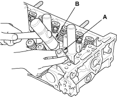
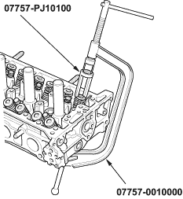
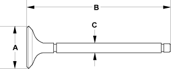

Special Tools Required
- Valve spring compressor attachment 07757-PJ10100
- Valve spring compressor 07757-0010000
Identify the valves and valve springs as they are removed so that each item can be reinstalled in its original position.
- Remove the cylinder head (see page 6-25).
- Using an appropriate-sized socket (A) and plastic mallet (B), lightly tap the valve retainer to loosen the valve keepers.

- Install the spring compressor. Compress the spring, and remove the valve keepers.


- Remove the valves (see page 6-34).
- Measure the valve in these areas.
Intake Valve Dimensions
A Standard (New):
34.85 - 35.15 mm
(1.372 - 1.384 in.)
B Standard (New):
108.8 - 109.4 mm
(4.283 - 4.307 in.)
C Standard (New):
5.475 - 5.485 mm
(0.2156 - 0.2159 in.)
C Service Limit:
5.445 mm (0.214 in.)
Exhaust Valve Dimensions
A Standard (New):
29.85 - 30.15 mm
(1.175 - 1.187 in.)
B Standard (New):
108.4 - 109.0 mm
(4.268 - 4.291 in.)
C Standard (New):
5.450 - 5.460 mm
(0.2146 - 0.2150 in.)
C Service Limit:
5.42 mm (0.213 in.)
